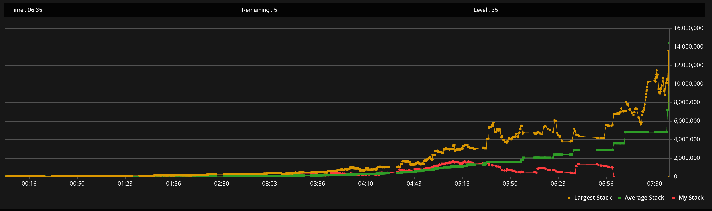

S1 早期深码
41%
56手
S2 中期过渡
26%
81手
S3 泡沫前
36%
62手
S4 泡沫期
35%
71手
S5 钱圈初期
39%
46手
S6 深圈中段
25%
40手
S7 FT泡沫
15%
40手
S8 FT
13%
15手
S9 3-handed
0%
5手
VPIP 从早期的 41% 逐步收紧到 FT 的 13%——完美符合「松→紧→紧上加紧」的锦标赛节奏。

🟢 爬升期 00:16→04:43
翻后技术碾压。JT 顺子 double、QQ triple up——cash 翻后在早期是核武器。
🟡 加速期 04:43→05:16
中段爆发。筹码曲线陡升。
🔴 下坠期 05:16→07:00
82o steal 中长码 → 滑入 push-fold → AQo 三枪 bluff → Level 32-37 崩塌。黄色 CL 线同时段在涨——此消彼长。
红线 = Hero 筹码 · 黄线 = 最大筹码 · 绿线 = 平均筹码。红线下坠起点正好对应今晚复盘的三手关键失误。
56手 · VPIP 41% · 净变化 -4.7bb
⭐⭐⭐⭐ 8/10 · 均码 ~120bb · Hero 62bb 低于均码 — 翻后技术兜住了偏高的 VPIP
81手 · VPIP 26% · 净变化 -16bb
⭐⭐⭐ 6/10 · 均码 ~70bb · Hero 34bb 低于均码 — A7o ISO shove 在此，最大显性失误
62手 · VPIP 36% · 净变化 +44.5bb 🔥
⭐⭐⭐⭐⭐ 10/10 · 均码 ~40bb · Hero 70bb 超均码 — 全场最佳。JTs double + QQ triple，翻后核武器全开
71手 · VPIP 35% · 净变化 -18bb
⭐⭐⭐⭐ 8/10 · 均码 ~38bb · Hero 42bb 均码以上 — ICM 三连 fold 全对，AQo 三枪 bluff 是唯一失误
46手 · VPIP 39% · 净变化 +10bb
⭐⭐⭐⭐ 8/10 · 均码 ~20bb · Hero 45bb 超均码 — 连续 steal 精准，利滚利执行到位
40手 · VPIP 25% · 净变化 -22.5bb
⭐⭐⭐ 6/10 · 均码 ~22bb · Hero 18bb 跌破均码 — 崩塌前兆。card-dead 非主因，是不敢 shove 边缘牌
40手 · VPIP 15% · 净变化 -6.5bb
⭐⭐ 4/10 · 均码 ~26bb · Hero 17bb 低于均码 — 82o steal 在此，全场最大结构性失误
20手 · VPIP 13% · 5th place
FT ⭐⭐⭐⭐ 7/10 · 3-handed ⭐⭐⭐ 5/10 · 均码 ~36→60bb · Hero 8→13→6bb 严重低于 — AK triple up 救命。3bb 以下等 premium 没等到
① 翻后技术碾压
JTs flop gutshot → turn 中顺 double；QQ triple up 翻后三街 value。cash 翻后在早期和中期就是核武器。
② ICM 纪律极强
FT 泡沫连续三手 fold（K9s SB、K4s BTN、KTo BTN）。这三个 fold 放在 cash 里是不可能发生的。你在 MTT 里做到了。
③ 钱圈释放后的侵略模式
ITM 后连续 4 个 SB shove steal，VPIP 从 25% 跳回 39%。利滚利的完美演绎——用对手的钱圈恐惧偷盲积累筹码。
④ 从谷底爬回来的韧性
两次掉到 8bb 以下：Lv13(18.8bb) 和 Lv33(8.4bb)。两次都靠正确 push 活过来。锦标赛不是不掉血——是掉血了还能活。
⑤ VPIP 曲线完美
41%→26%→36%→35%→39%→25%→15%→13%→0%。早期松积累、中期适度、泡沫收紧、FT 极紧。这个曲线是教科书级的。
⑥ 持久耐力
6.5 小时、416 手。没有 tilt、没有情绪化决策。从 3.3bb 爬回来、从 32 名爬回来——耐心是你最大的武器。
① A7o BTN ISO shove over CO open + HJ(AT) jam — 整体最大的失误
Lv9 250/500, CO(92bb) open 2x, HJ 12.4bb 3b-shove AT, Hero BTN 61.5bb ISO shove A7o。A7o vs AT: 28% equity（被压制）。vs 12bb 正常 shove 范围: ~38-40%（需 47%+）。A7o 在任何码量下都不是接 all-in 的牌——它只能做 aggressor（有 fold equity），不能做 caller（没有 fold equity）。且 CO 还在后面。正确动作: fold。Bounty greed 让 Hero 忽略了基本范围数学。教训: A7o = steal 牌，不是 showdown 牌。翻前推人用，翻前接人不用。
② 93s SB shove at 33bb — ICM 精准剥削 ✅（已更正）
BB 只有 4.69bb，effective stack 是 4.69bb 不是 33bb。BB 快死了只拿 premium 接（~10-15%），fold equity 高达 85-90%。EV ≈ +1.93bb。这不是 gambol——是对短码 ICM 恐惧的结构性剥削。感谢施老师纠正。
③ AQo triple barrel bluff — 三枪 air 送进坚果花
Lv21 59bb，HJ open AQo → BTN flat → 翻牌 T92r c-bet → 转牌 K 再打半池 → 河牌 8c（完成同花）all-in bluff。BTN 拿 Ac5c 秒接。AQ 全 miss，零摊牌价值。短码 BTN 已经跟了两条街 commit 1/3 筹码——不会这时候 fold。正确路线：转牌 check-fold，最多打一枪 flop 就放弃。这手丢了 24bb。教训：triple barrel 选错了对手（短码 commit 后不 fold）和选错了时机（河牌完成了同花）。翻后技术好不等于每一枪都要打。
④ Level 32→37 筹码崩塌 — 29bb→5bb
核心原因不是 card-dead——是82o SB steal（20bb偷19bb中长码）+ QTo BTN c-bet 被3bb短码K8o接杀。82o pre steal 选错对象（中长码 defend 得起、能 float 反推），翻后 OOP 中对又被 float。详见第七关偷盲纪律。修正：不偷中长码(15-25bb)，OOP steal 失败 flop check 认赔。A5o、KQs 开池正常——只有 82o 是可以避免的损失。
⑤ 早期 VPIP 41% — 偏松但翻后兜住了
十阶段建议早期 20-25%。你的 41% 靠翻后技术消化掉了边际牌。但如果翻后 run bad，这个 VPIP 会直接崩。建议收紧到 25-30%。
三手失误的排序改变了。最初以为 A7o ISO shove 是最大失误，但经过 6/12 凌晨逐手复盘：82o SB steal（15bb 偷 20bb 中长码）才是根源。它不像 A7o 那样一次丢 61bb——它是静悄悄地把你从 20bb 推进 14bb push-fold 区，同时把对手从 19bb 养进安全区。每一级盲注增长都在放大它的后果。A7o 是显性失误，82o 是结构性失误——后者更致命。
但更重要的是你做对了足够多的事所以活到了第 5 名： FT 泡沫的三个 fold、钱圈后的四个 steal、两次从谷底的翻倍。 这不是运气——是 6.5 小时的纪律积累。
48x ROI 不是因为你跑马赢了——是因为你在 90% 的手牌里做出了正确的 fold 和正确的 steal。
Case Study · 锦标赛特训营 · 2026-06-12 (已修正：AQo→失误/82o→最大失误/评分+均码对照)